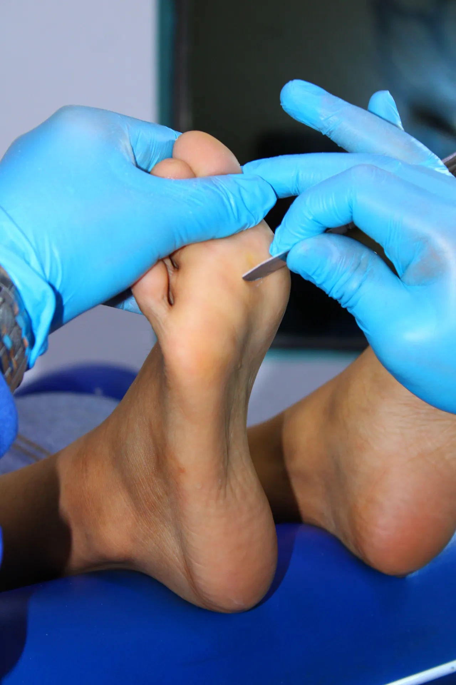
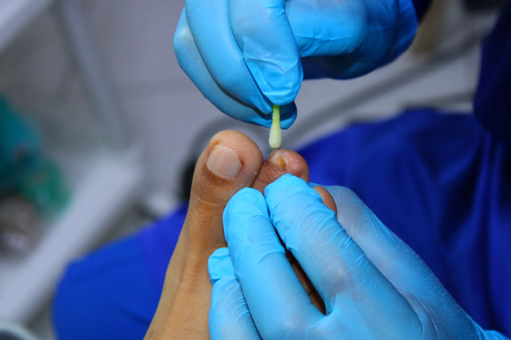
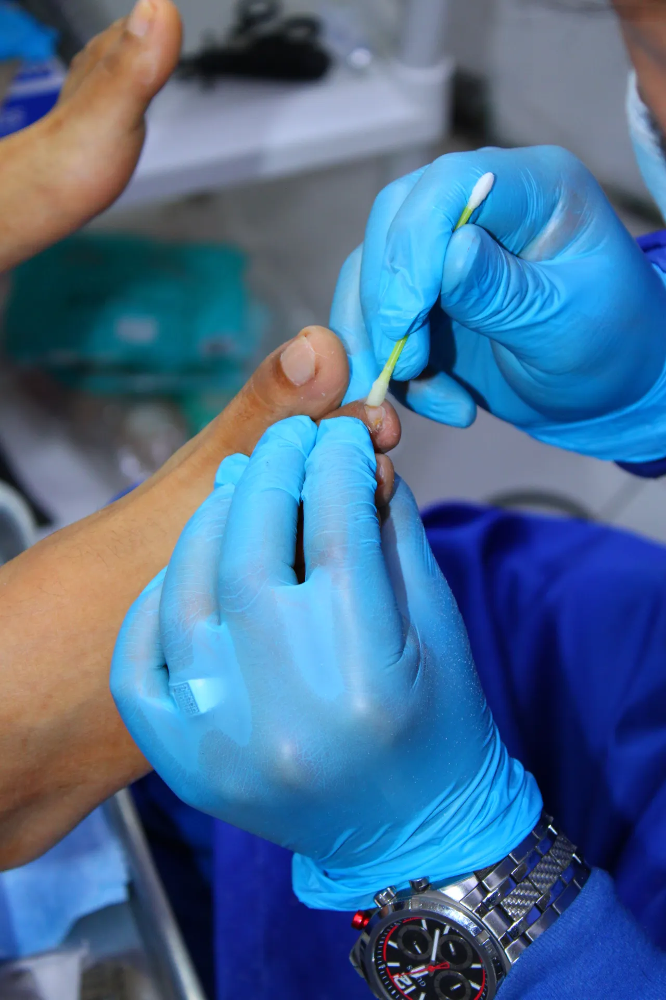

Nuestros Servicios
Ofrecemos una amplia gama de tratamientos para el cuidado integral de tus pies, desde el cuidado básico hasta procedimientos especializados.

Tratamiento de Uña Encarnada
Alivio inmediato sin dolor, mismo día.
Solución efectiva para la onicocriptosis. Utilizamos técnicas mínimamente invasivas con instrumental esterilizado para eliminar el dolor y prevenir infecciones.
Agendar cita
Eliminación de Callos y Durezas
Sin dolor, sin cortes, resultados inmediatos.
Remoción segura y profesional de hiperqueratosis usando instrumental esterilizado. El procedimiento es indoloro y los resultados se notan desde la primera sesión.
Agendar cita
Tratamiento de Hongos (Onicomicosis)
Diagnóstico preciso y tratamiento efectivo.
Identificamos y eliminamos infecciones fúngicas en uñas con tratamientos especializados. Recupera uñas sanas y sin manchas con seguimiento personalizado.
Agendar cita
Podología Deportiva
Cuida tus pies, mejora tu rendimiento.
Prevención y tratamiento de lesiones en atletas como fascitis plantar y espolón calcáneo. Mantén tus pies en óptimas condiciones para seguir rindiendo al máximo.
Agendar cita
Cuidado de Pie Diabético
Atención especializada para pacientes diabéticos.
Revisión y tratamiento preventivo para evitar complicaciones graves. Un control regular puede marcar la diferencia en tu calidad de vida.
Agendar cita